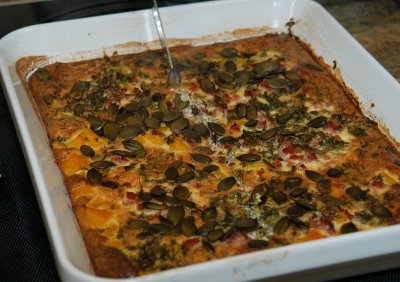

| Zutaten für 4 Personen: | |
| 500 g | Kürbisfleisch (Butternuss) |
| 1 KL | Gemüsebouillon |
| 250 g | Mascarpone |
| 4 | Eier |
| 1 dl | Milch |
| Cayennepfeffer | |
| wenig | Salz |
| 100 g | Schinkentranchen |
| 1 Bund | Petersilie |
| 1-2 EL | Kürbiskerne |
Kürbis entkernen, schälen und in Würfel schneiden.
Den Kürbis mit 1.5 dl Wasser und 1 KL Gemüsebouillon in einer Pfanne mit geschlossenem Deckel weich dämpfen. (Ca. 10-20 Minuten je nach Kürbis.)
Eine Gratinform einfetten und den Kürbis hineingeben.
Mascarpone, Eier, 0.5-1 dl Milch, Cayennepfeffer und wenig Salz zu einer giessbaren Masse verrühren. Die Masse gleichmässig über die Kürbiswürfel giessen.
Den Schinken in kleine Würfel schneiden und auf dem Guss verteilen.
Peterli fein hacken und darauf verteilen.
1-2 EL Kürbiskerne darüber streuen.
Bei 200°C in der Ofenmitte 40 Minuten backen. Das Ei muss die Masse stocken. Eventuell in den letzten 10 Minuten mit Alufolie zudecken.
Kürbiskochkurs, Herbst 2009 bei Patricia Krummenacher.
Schmeckte hervorragend. RE 25.1.2010
Im Nov 2013 gab es ein bisschen viel Guss im Verhältnis zu wenig Kürbis. Aufpassen beim Einkaufen: beim ganzen Kürbis schneidet man recht viel Gewicht weg!
Die vielen Eier machen das etwas Omlettartig und der Mascarpone verliert. Teuren Mascarpone vielleicht durch einen dl Rahm ersetzen und vielleicht ein Ei weglassen. RE 6 Nov 2017